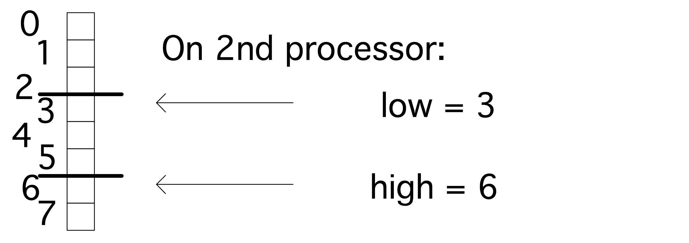

crumb trail: > petsc-objects > Distributed objects
PETSc is based on the SPMD model, and all its objects act like they exist in parallel, spread out over all the processes. Therefore, prior to discussing specific objects in detail, we briefly discuss how PETSc treats distributed objects.
For a matrix or vector you need to specify the size. This can be done two ways:
If you specify both the global size and the local sizes, PETSc will check for consistency.
For example, if you have a vector of $N$ components, or a matrix of $N$ rows, and you have $P$ processes, each process will receive $N/P$ components or rows if $P$ divides evenly in~$N$. If $P$ does not divide evenly, the excess is spread over the processes.
The way the distribution is done is by contiguous blocks: with 10 processes and 1000 components in a vector, process 0 gets the range $0\cdots99$, process 1 gets $1\cdots199$, et cetera. This simple scheme suffices for many cases, but PETSc has facilities for more sophisticated load balancing.
crumb trail: > petsc-objects > Distributed objects > Support for distributions
Once an object has been created and distributed, you do not need to remember the size or the distribution yourself: you can query these with calls such as \clstinline{VecGetSize}, \clstinline{VecGetLocalSize}.
The corresponding matrix routines \clstinline{MatGetSize}, \clstinline{MatGetLocalSize} give both information for the distributions in $i$ and~$j$ direction, which can be independent. Since a matrix is distributed by rows, \clstinline{MatGetOwnershipRange} only gives a row range.
// split.c N = 100; n = PETSC_DECIDE; PetscSplitOwnership(comm,&n,&N); PetscPrintf(comm,"Global %d, local %d\n",N,n); N = PETSC_DECIDE; n = 10; PetscSplitOwnership(comm,&n,&N); PetscPrintf(comm,"Global %d, local %d\n",N,n);
While PETSc objects are implemented using local memory on each process, conceptually they act like global objects, with a global indexing scheme. Thus, each process can query which elements out of the global object are stored locally. For vectors, the relevant routine is \clstinline{VecGetOwnershipRange}, which returns two parameters, \clstinline{low} and~\clstinline{high}, respectively the first element index stored, and one-more-than-the-last index stored.
This gives the idiom:
VecGetOwnershipRange(myvector,&low,&high); for (int myidx=low; myidx<high; myidx++) // do something at index myidx
These conversions between local and global size can also be done explicitly, using the
PetscSplitOwnership Synopsis #include "petscsys.h" PetscErrorCode PetscSplitOwnership (MPI_Comm comm,PetscInt *n,PetscInt *N) Collective (if n or N is PETSC_DECIDE) Input Parameters comm - MPI communicator that shares the object being divided n - local length (or PETSC_DECIDE to have it set) N - global length (or PETSC_DECIDE)
crumb trail: > petsc-objects > Scalars
Unlike programming languages that explicitly distinguish between single and double precision numbers, PETSc has only a single scalar type: PetscScalar . The precision of this is determined at installation time. In fact, a \clstinline{PetscScalar} can even be a complex number if the installation specified that the scalar type is complex.
Even in applications that use complex numbers there can be quantities that are real: for instance, the norm of a complex vector is a real number. For that reason, PETSc also has the type PetscReal . There is also an explicit PetscComplex .
Furthermore, there is
#define PETSC_BINARY_INT_SIZE (32/8) #define PETSC_BINARY_FLOAT_SIZE (32/8) #define PETSC_BINARY_CHAR_SIZE (8/8) #define PETSC_BINARY_SHORT_SIZE (16/8) #define PETSC_BINARY_DOUBLE_SIZE (64/8) #define PETSC_BINARY_SCALAR_SIZE sizeof(PetscScalar)
crumb trail: > petsc-objects > Scalars > Integers
Integers in PETSc are likewise of a size determined at installation time: PetscInt can be 32 or 64 bits. The latter possibility is useful for indexing into large vectors and matrices. Furthermore, there is a PetscErrorCode type for catching the return code of PETSc routines; see section 39.1.2 .
For compatibility with other packages there are two more integer types:
Many external packages do not support 64-bit integers.
crumb trail: > petsc-objects > Scalars > Complex
Numbers of type PetscComplex have a precision matching PetscReal .
Form a complex number using PETSC_i :
PetscComplex x = 1.0 + 2.0 * PETSC_i;
The real and imaginary part can be extract with the functions PetscRealPart and PetscImaginaryPart which return a PetscReal .
There are also routines VecRealPart and VecImaginaryPart that replace a vector with its real or imaginary part respectively. Likewise MatRealPart and MatImaginaryPart .
crumb trail: > petsc-objects > Scalars > MPI Scalars
For MPI calls, MPIU_REAL is the MPI type corresponding to the current PetscReal .
For MPI calls, MPIU_SCALAR is the MPI type corresponding to the current PetscScalar .
For MPI calls, MPIU_COMPLEX is the MPI type corresponding to the current PetscComplex .
crumb trail: > petsc-objects > Scalars > Booleans
There is a PetscBool datatype with values PETSC_TRUE and PETSC_FALSE .
crumb trail: > petsc-objects > Vec: Vectors
Vectors are objects with a linear index. The elements of a vector are floating point numbers or complex numbers (see section 33.2 ), but not integers: for that see section 33.5.1 .
crumb trail: > petsc-objects > Vec: Vectors > Vector construction
Constructing a vector takes a number of steps. First of all, the vector object needs to be created on a communicator with
C: PetscErrorCode VecCreate(MPI_Comm comm,Vec *v); F: VecCreate( comm,v,ierr ) MPI_Comm :: comm Vec :: v PetscErrorCode :: ierr Python: vec = PETSc.Vec() vec.create() # or: vec = PETSc.Vec().create()
In python, \plstinline{PETSc.Vec()} creates an object with null handle, so a subsequent \plstinline{create()} call is needed. In C and Fortran, the vector type is a keyword; in Python it is a member of PETSc.Vec.Type .
The corresponding routine
Synopsis #include "petscvec.h" PetscErrorCode VecDestroy(Vec *v) Collective on Vec Input Parameters: v -the vector
The vector type needs to be set with
Synopsis: #include "petscvec.h" PetscErrorCode VecSetType(Vec vec, VecType method) Collective on Vec Input Parameters: vec- The vector object method- The name of the vector type Options Database Key -vec_type-Sets the vector type; use -help for a list of available types
The most common vector types are:
Once you have created one vector, you can make more like it by VecDuplicate ,
VecDuplicate(Vec old,Vec *new);
or VecDuplicateVecs
VecDuplicateVecs(Vec old,PetscInt n,Vec **new);
for multiple vectors. For the latter, there is a joint destroy call VecDestroyVecs :
VecDestroyVecs(PetscInt n,Vec **vecs);
(which is different in Fortran).
crumb trail: > petsc-objects > Vec: Vectors > Vector layout
Next in the creation process the vector size is set with
C: #include "petscvec.h" PetscErrorCode VecSetSizes(Vec v, PetscInt n, PetscInt N) Collective on Vec Input Parameters v :the vector n : the local size (or PETSC_DECIDE to have it set) N : the global size (or PETSC_DECIDE) Python: PETSc.Vec.setSizes(self, size, bsize=None) size is a tuple of local/global
The size is queried with
VecGetSize / VecGetLocalSize C: #include "petscvec.h" PetscErrorCode VecGetSize(Vec x,PetscInt *gsize) PetscErrorCode VecGetLocalSize(Vec x,PetscInt *lsize) Input Parameter x -the vector Output Parameters gsize - the global length of the vector lsize - the local length of the vector Python: PETSc.Vec.getLocalSize(self) PETSc.Vec.getSize(self) PETSc.Vec.getSizes(self)
Each processor gets a contiguous part of the vector. Use
#include "petscvec.h" PetscErrorCode VecGetOwnershipRange(Vec x,PetscInt *low,PetscInt *high) Input parameter: x - the vector Output parameters: low - the first local element, pass in NULL if not interested high - one more than the last local element, pass in NULL if not interested Fortran note: use PETSC_NULL_INTEGER for NULL.
In general it is best to let PETSc take care of memory management of matrix and vector objects, including allocating and freeing the memory. However, in cases where PETSc interfaces to other applications it maybe desirable to create a \clstinline{Vec} object from an already allocated array: VecCreateSeqWithArray and VecCreateMPIWithArray .
VecCreateSeqWithArray
(MPI_Comm comm,PetscInt bs,
PetscInt n,PetscScalar *array,Vec *V);
VecCreateMPIWithArray
(MPI_Comm comm,PetscInt bs,
PetscInt n,PetscInt N,PetscScalar *array,Vec *vv);
As you will see in section 33.4.1 , you can also create vectors based on the layout of a matrix, using MatCreateVecs .
crumb trail: > petsc-objects > Vec: Vectors > Vector operations
There are many routines operating on vectors that you need to write scientific applications. Examples are: norms, vector addition (including BLAS -type `AXPY' routines:
Synopsis: #include "petscvec.h" PetscErrorCode VecAXPY(Vec y,PetscScalar alpha,Vec x) Not collective on Vec Input Parameters: alpha - the scalar x, y - the vectors Output Parameter: y - output vector
For debugging purpoases, the
C: #include "petscvec.h" PetscErrorCode VecView(Vec vec,PetscViewer viewer) for ascii output use: PETSC_VIEWER_STDOUT_WORLD Python: PETSc.Vec.view(self, Viewer viewer=None) ascii output is default or use: PETSc.Viewer.STDOUT(type cls, comm=None)
// fftsine.c ierr = VecView(signal,PETSC_VIEWER_STDOUT_WORLD); CHKERRQ(ierr); ierr = MatMult(transform,signal,frequencies); CHKERRQ(ierr); ierr = VecScale(frequencies,1./Nglobal); CHKERRQ(ierr); ierr = VecView(frequencies,PETSC_VIEWER_STDOUT_WORLD); CHKERRQ(ierr);
Here are a couple of representative vector routines:
PetscReal lambda; ierr = VecNorm(y,NORM_2,&lambda); CHKERRQ(ierr); ierr = VecScale(y,1./lambda); CHKERRQ(ierr);
Create a vector where the values are a single sine wave. using VecGetSize , VecGetLocalSize , VecGetOwnershipRange . Quick visual inspection:
ibrun vec -n 12 -vec_view
Use the routines
Synopsis: #include "petscvec.h" PetscErrorCode VecDot(Vec x,Vec y,PetscScalar *val) Collective on Vec Input Parameters: x, y - the vectors Output Parameter: val - the dot product
Synopsis: #include "petscvec.h" PetscErrorCode VecScale(Vec x, PetscScalar alpha) Not collective on Vec Input Parameters: x - the vector alpha - the scalar Output Parameter: x - the scaled vector
C:
#include "petscvec.h"
PetscErrorCode VecNorm(Vec x,NormType type,PetscReal *val)
where type is
NORM_1, NORM_2, NORM_FROBENIUS, NORM_INFINITY
Python:
PETSc.Vec.norm(self, norm_type=None)
where norm is variable in PETSc.NormType:
NORM_1, NORM_2, NORM_FROBENIUS, NORM_INFINITY or
N1, N2, FRB, INF
The plus operator is overloaded so that
x+y
is defined.
x.sum() # max,min,....
x.dot(y)
x.norm(PETSc.NormType.NORM_INFINITY)
crumb trail: > petsc-objects > Vec: Vectors > Vector operations > Split collectives
MPI is capable (in principle) of `overlapping computation and communication', or latency hiding . PETSc supports this by splitting norms and inner products into two phases.
Even if you achieve no overlap, it is possible to use these calls to combine a number of `collectives': do the Begin calls of one inner product and one norm; then do (in the same sequence) the End calls. This means that only a single reduction is performed on a two-word package, rather than two separate reductions on a single word.
crumb trail: > petsc-objects > Vec: Vectors > Vector elements
Setting elements of a traditional array is simple. Setting elements of a distributed array is harder. First of all, VecSet sets the vector to a constant value:
ierr = VecSet(x,1.); CHKERRQ(ierr);
In the general case, setting elements in a PETSc vector is done through a function
Synopsis #includePetscErrorCode VecSetValue (Vec v,PetscInt row,PetscScalar value,InsertMode mode); Not Collective Input Parameters v- the vector row- the row location of the entry value- the value to insert mode- either INSERT_VALUES or ADD_VALUES
Synopsis
#include "petscvec.h"
PetscErrorCode VecSetValues
(Vec x,PetscInt ni,const PetscInt
ix[],const PetscScalar y[],InsertMode iora)
Not Collective
Input Parameters:
x - vector to insert in
ni - number of elements to add
ix - indices where to add
y - array of values
iora - either INSERT_VALUES or ADD_VALUES, where
ADD_VALUES adds values to any existing entries, and
INSERT_VALUES replaces existing entries with new values
We illustrate both routines by setting a single element with VecSetValue , and two elements with VecSetValues . In the latter case we need an array of length two for both the indices and values. The indices need not be successive.
i = 1; v = 3.14; VecSetValue(x,i,v,INSERT_VALUES); ii[0] = 1; ii[1] = 2; vv[0] = 2.7; vv[1] = 3.1; VecSetValues(x,2,ii,vv,INSERT_VALUES);
call VecSetValue(x,i,v,INSERT_VALUES,ierr) ii(1) = 1; ii(2) = 2; vv(1) = 2.7; vv(2) = 3.1 call VecSetValues(x,2,ii,vv,INSERT_VALUES,ierr)
Using \clstinline{VecSetValue} for specifying a local vector element corresponds to simple insertion in the local array. However, an element that belongs to another process needs to be transferred. This done in two calls:
#include "petscvec.h" PetscErrorCode VecAssemblyBegin(Vec vec) PetscErrorCode VecAssemblyEnd(Vec vec) Collective on Vec Input Parameter vec -the vector
if (myrank==0) then
do vecidx=0,globalsize-1
vecelt = vecidx
call VecSetValue(vector,vecidx,vecelt,INSERT_VALUES,ierr)
end do
end if
call VecAssemblyBegin(vector,ierr)
call VecAssemblyEnd(vector,ierr)
(If you know the MPI library, you'll recognize that the first call corresponds to posting nonblocking send and receive calls; the second then contains the wait calls. Thus, the existence of these separate calls make latency hiding possible.)
VecAssemblyBegin(myvec); // do work that does not need the vector myvec VecAssemblyEnd(myvec);
Elements can either be inserted with INSERT_VALUES , or added with ADD_VALUES in the VecSetValue / VecSetValues call. You can not immediately mix these modes; to do so you need to call VecAssemblyBegin / VecAssemblyEnd in between add/insert phases.
crumb trail: > petsc-objects > Vec: Vectors > Vector elements > Explicit element access
Since the vector routines cover a large repertoire of operations, you hardly ever need to access the actual elements. Should you still need those elements, you can use
C: #include "petscvec.h" PetscErrorCode VecGetArray(Vec x,PetscScalar **a) PetscErrorCode VecGetArrayRead(Vec x,const PetscScalar **a) Input Parameter x : the vector Output Parameter a : location to put pointer to the array PetscErrorCode VecRestoreArray(Vec x,PetscScalar **a) PetscErrorCode VecRestoreArrayRead(Vec x,const PetscScalar **a) Input Parameters x : the vector a : location of pointer to array obtained from VecGetArray() Fortran90: #includeuse petscvec VecGetArrayF90(Vec x,{Scalar, pointer :: xx_v(:)},integer ierr) (there is a Fortran77 version) VecRestoreArrayF90(Vec x,{Scalar, pointer :: xx_v(:)},integer ierr) Python: PETSc.Vec.getArray(self, readonly=False) ?? PETSc.Vec.resetArray(self, force=False)
PETSc insists that you properly release this pointer again with
C: #include "petscvec.h" PetscErrorCode VecRestoreArray(Vec x,PetscScalar **a) Logically Collective on Vec Input Parameters: x- the vector a- location of pointer to array obtained from VecGetArray() Fortran90: #includeuse petscvec VecRestoreArrayF90(Vec x,{Scalar, pointer :: xx_v(:)},integer ierr) Input Parameters: x- vector xx_v- the Fortran90 pointer to the array
Note that in a distributed running context you can only get the array of local elements. Accessing the elements from another process requires explicit communication; see section 33.5.2 .
PetscScalar *in_array,*out_array; VecGetArrayRead(in,&in_array); VecGetArray(out,&out_array); VecGetLocalSize(in,&localsize); for (int i=0; i<localsize; i++) out_array[i] = 2*in_array[i]; VecRestoreArrayRead(in,&in_array); VecRestoreArray(out,&out_array);
There are some variants to the \clstinline{VecGetArray} operation:
Replace the storage of a vector by another array Synopsis #include "petscvec.h" PetscErrorCode VecPlaceArray(Vec vec,const PetscScalar array[]) PetscErrorCode VecReplaceArray(Vec vec,const PetscScalar array[]) Input Parameters vec - the vector array - the array
Putting the array of one vector into another has a common application, where you have a distributed vector, but want to apply PETSc operations to its local section as if it were a sequential vector. In that case you would create a sequential vector, and VecPlaceArray the contents of the distributed vector into it.
There are routines such as VecGetArrayF90 (with corresponding VecRestoreArrayF90 ) that return a (Fortran) pointer to a one-dimensional array.
!! vecset.F90
Vec :: vector
PetscScalar,dimension(:),pointer :: elements
call VecGetArrayF90(vector,elements,ierr)
write (msg,10) myrank,elements(1)
10 format("First element on process",i3,":",f7.4,"\n")
call PetscSynchronizedPrintf(comm,msg,ierr)
call PetscSynchronizedFlush(comm,PETSC_STDOUT,ierr)
call VecRestoreArrayF90(vector,elements,ierr)
{F90 array access through pointer}
x.getArray()
x.getValues(3)
x.getValues([1, 2])
crumb trail: > petsc-objects > Vec: Vectors > File I/O
As mentioned above, VecView can be used for displaying a vector on the terminal screen. However, viewers are actually much more general. As explained in section 39.2.2 , they can also be used to export vector data, for instance to file.
The converse operation, to load a vector that was exported in this manner, is VecLoad .
Since these operations are each other's inverses, usually you don't need to know the file format. But just in case:
PetscInt VEC_FILE_CLASSID PetscInt number of rows PetscScalar *values of all entries
That is, the file starts with a magic number, then the number of vector elements, and subsequently all scalar values.
crumb trail: > petsc-objects > Mat: Matrices
PETSc matrices come in a number of types, sparse and dense being the most important ones. Another possibility is to have the matrix in operation form, where only the action $y\leftarrow Ax$ is defined.
crumb trail: > petsc-objects > Mat: Matrices > Matrix creation
Creating a matrix also starts by specifying a communicator on which the matrix lives collectively:
C: PetscErrorCode MatCreate(MPI_Comm comm,Mat *v); Python: mat = PETSc.Mat() mat.create() # or: mat = PETSc.Mat().create()
Set the matrix type with
#include "petscmat.h" PetscErrorCode MatSetType(Mat mat, MatType matype) Collective on Mat Input Parameters: mat- the matrix object matype- matrix type Options Database Key -mat_type-Sets the type; use -help for a list of available methods (for instance, seqaij)
Distributed matrices are partitioned by block rows: each process stores a block row , that is, a contiguous set of matrix rows. It stores all elements in that block row.
FIGURE 33.1: Matrix partitioning by block rows
In order for a matrix-vector product to be executable, both the input and output vector need to be partitioned conforming to the matrix.
While for dense matrices the block row scheme is not scalable, for matrices from PDEs it makes sense. There, a subdivision by matrix blocks would lead to many empty blocks.
Just as with vectors, there is a local and global size; except that that now applies to rows and columns. Set sizes with
C:
#include "petscmat.h"
PetscErrorCode MatSetSizes(Mat A,
PetscInt m, PetscInt n, PetscInt M, PetscInt N)
Input Parameters
A : the matrix
m : number of local rows (or PETSC_DECIDE)
n : number of local columns (or PETSC_DECIDE)
M : number of global rows (or PETSC_DETERMINE)
N : number of global columns (or PETSC_DETERMINE)
Python:
PETSc.Mat.setSizes(self, size, bsize=None)
where 'size' is a tuple of 2 global sizes
or a tuple of 2 local/global pairs
C: #include "petscmat.h" PetscErrorCode MatGetSize(Mat mat,PetscInt *m,PetscInt *n) PetscErrorCode MatGetLocalSize(Mat mat,PetscInt *m,PetscInt *n) Python: PETSc.Mat.getSize(self) # tuple of global sizes PETSc.Mat.getLocalSize(self) # tuple of local sizes PETSc.Mat.getSizes(self) # tuple of local/global size tuples
Instead of querying a matrix size and creating vectors accordingly, the routine
Synopsis Get vector(s) compatible with the matrix, i.e. with the same parallel layout #include "petscmat.h" PetscErrorCode MatCreateVecs(Mat mat,Vec *right,Vec *left) Collective on Mat Input Parameter mat - the matrix Output Parameter; right - (optional) vector that the matrix can be multiplied against left - (optional) vector that the matrix vector product can be stored in
crumb trail: > petsc-objects > Mat: Matrices > Nonzero structure
In case of a dense matrix, once you have specified the size and the number of MPI processes, it is simple to determine how much space PETSc needs to allocate for the matrix. For a sparse matrix this is more complicated, since the matrix can be anywhere between completely empty and completely filled in. It would be possible to have a dynamic approach where, as elements are specified, the space grows; however, repeated allocations and re-allocations are inefficient. For this reason PETSc puts a small burden on the programmer: you need to specify a bound on how many elements the matrix will contain.
We explain this by looking at some cases. First we consider a matrix that only lives on a single process. You would then use
#include "petscmat.h"
PetscErrorCode MatSeqAIJSetPreallocation
(Mat B,PetscInt nz,const PetscInt nnz[])
PetscErrorCode MatMPIAIJSetPreallocation
(Mat B,PetscInt d_nz,const PetscInt d_nnz[],
PetscInt o_nz,const PetscInt o_nnz[])
Input Parameters
B - the matrix
nz/d_nz/o_nz - number of nonzeros per row in matrix or
diagonal/off-diagonal portion of local submatrix
nnz/d_nnz/o_nnz - array containing the number of nonzeros in the various rows of
the sequential matrix / diagonal / offdiagonal part of the local submatrix
or NULL (PETSC_NULL_INTEGER in Fortran) if nz/d_nz/o_nz is used.
Python:
PETSc.Mat.setPreallocationNNZ(self, [nnz_d,nnz_o] )
PETSc.Mat.setPreallocationCSR(self, csr)
PETSc.Mat.setPreallocationDense(self, array)
MatSeqAIJSetPreallocation(A,3, NULL);
If the matrix is less regular you can use the third argument to give an array of explicit row lengths:
int *rowlengths; // allocate, and then: for (int row=0; row<nrows; row++) rowlengths[row] = // calculation of row length MatSeqAIJSetPreallocation(A,NULL,rowlengths);
In case of a distributed matrix you need to specify this bound with respect to the block structure of the matrix. As illustrated in figure 33.2 , a matrix has a diagonal part and an off-diagonal part.
FIGURE 33.2: The diagonal and off-diagonal parts of a matrix
The diagonal part describes the matrix elements that couple elements of the input and output vector that live on this process. The off-diagonal part contains the matrix elements that are multiplied with elements not on this process, in order to compute elements that do live on this process.
The preallocation specification now has separate parameters for these diagonal and off-diagonal parts: with you specify for both either a global upper bound on the number of nonzeros, or a detailed listing of row lengths. For the matrix of the Laplace equation , this specification would seem to be:
MatMPIAIJSetPreallocation(A, 3, NULL, 2, NULL);
However, this is only correct if the block structure from the parallel division equals that from the lines in the domain. In general it may be necessary to use values that are an overestimate. It is then possible to contract the storage by copying the matrix.
Specifying bounds on the number of nonzeros is often enough, and not too wasteful. However, if many rows have fewer nonzeros than these bounds, a lot of space is wasted. In that case you can replace the NULL arguments by an array that lists for each row the number of nonzeros in that row.
crumb trail: > petsc-objects > Mat: Matrices > Matrix elements
You can set a single matrix element with
C: #includePetscErrorCode MatSetValue( Mat m,PetscInt row,PetscInt col,PetscScalar value,InsertMode mode) Input Parameters m : the matrix row : the row location of the entry col : the column location of the entry value : the value to insert mode : either INSERT_VALUES or ADD_VALUES Python: PETSc.Mat.setValue(self, row, col, value, addv=None) also supported: A[row,col] = value
After setting matrix elements, the matrix needs to be assembled. This is where PETSc moves matrix elements to the right processor, if they were specified elsewhere. As with vectors this takes two calls:
C:
#include "petscmat.h"
PetscErrorCode MatAssemblyBegin(Mat mat,MatAssemblyType type)
PetscErrorCode MatAssemblyEnd(Mat mat,MatAssemblyType type)
Input Parameters
mat- the matrix
type- type of assembly, either MAT_FLUSH_ASSEMBLY
or MAT_FINAL_ASSEMBLY
Python:
assemble(self, assembly=None)
assemblyBegin(self, assembly=None)
assemblyEnd(self, assembly=None)
there is a class PETSc.Mat.AssemblyType:
FINAL = FINAL_ASSEMBLY = 0
FLUSH = FLUSH_ASSEMBLY = 1
Elements can either be inserted ( INSERT_VALUES ) or added ( ADD_VALUES ). You can not immediately mix these modes; to do so you need to call MatAssemblyBegin / MatAssemblyEnd with a value of MAT_FLUSH_ASSEMBLY .
PETSc sparse matrices are very flexible: you can create them empty and then start adding elements. However, this is very inefficient in execution since the OS needs to reallocate the matrix every time it grows a little. Therefore, PETSc has calls for the user to indicate how many elements the matrix will ultimately contain.
MatSetOption(A, MAT_NEW_NONZERO_ALLOCATION_ERR, PETSC_FALSE)
crumb trail: > petsc-objects > Mat: Matrices > Matrix elements > Element access
If you absolutely need access to the matrix elements, there are routines such as
Synopsis:
#include "petscmat.h"
PetscErrorCode MatGetRow
(Mat mat,PetscInt row,
PetscInt *ncols,const PetscInt *cols[],const PetscScalar *vals[])
PetscErrorCode MatRestoreRow
(Mat mat,PetscInt row,
PetscInt *ncols,const PetscInt *cols[],const PetscScalar *vals[])
Input Parameters:
mat - the matrix
row - the row to get
Output Parameters
ncols - if not NULL, the number of nonzeros in the row
cols - if not NULL, the column numbers
vals - if not NULL, the values
Since PETSc is geared towards sparse matrices , this returns not only the element values, but also the column numbers, as well as the mere number of stored columns. If any of these three return values are not needed, they can be unrequested by setting the parameter passed to \clstinline{NULL}.
PETSc insists that you properly release the row again with
It is also possible to retrieve the full CRS contents of the local matrix with MatDenseGetArray , MatDenseRestoreArray , MatSeqAIJGetArray , MatSeqAIJRestoreArray . (Routines are deprecated.)
crumb trail: > petsc-objects > Mat: Matrices > Matrix operations
crumb trail: > petsc-objects > Mat: Matrices > Matrix operations > Matrix-vector operations
In the typical application of PETSc, solving large sparse linear systems of equations with iterative methods, matrix-vector operations are most important. Foremost there is the matrix-vector product
Synopsis #include "petscmat.h" PetscErrorCode MatMult(Mat mat,Vec x,Vec y) PetscErrorCode MatMultTranspose(Mat mat,Vec x,Vec y) Neighbor-wise Collective on Mat Input Parameters mat - the matrix x - the vector to be multiplied Output Parameters y - the result
For the BLAS gemv semantics $y\leftarrow \alpha Ax + \beta y$,
Synopsis #include "petscmat.h" PetscErrorCode MatMultAdd(Mat mat,Vec x,Vec y,Vec z) Neighbor-wise Collective on Mat Input Parameters mat - the matrix x, y - the vectors Output Parameters z -the result Notes The vectors x and z cannot be the same.
crumb trail: > petsc-objects > Mat: Matrices > Matrix operations > Matrix-matrix operations
There is a number of matrix-matrix routines such as MatMatMult .
crumb trail: > petsc-objects > Mat: Matrices > Submatrices
Given a parallel matrix, there are two routines for extracting submatrices:
crumb trail: > petsc-objects > Mat: Matrices > Shell matrices
In many scientific applications, a matrix stands for some operator, and we are not intrinsically interested in the matrix elements, but only in the action of the matrix on a vector. In fact, under certain circumstances it is more convenient to implement a routine that computes the matrix action than to construct the matrix explicitly.
Maybe surprisingly, solving a linear system of equations can be handled this way. The reason is that PETSc's iterative solvers (section 36.1 ) only need the matrix-times-vector (and perhaps the matrix-transpose-times-vector) product.
PETSc supports this mode of working. The routine
#include "petscmat.h"
PetscErrorCode MatCreateShell
(MPI_Comm comm,
PetscInt m,PetscInt n,PetscInt M,PetscInt N,
void *ctx,Mat *A)
Collective
Input Parameters:
comm- MPI communicator
m- number of local rows (must be given)
n- number of local columns (must be given)
M- number of global rows (may be PETSC_DETERMINE)
N- number of global columns (may be PETSC_DETERMINE)
ctx- pointer to data needed by the shell matrix routines
Output Parameter:
A -the matrix
crumb trail: > petsc-objects > Mat: Matrices > Shell matrices > Shell operations
The next step is then to add the custom multiplication routine, which will be invoked by MatMult :
#include "petscmat.h" PetscErrorCode MatShellSetOperation (Mat mat,MatOperation op,void (*g)(void)) Logically Collective on Mat Input Parameters: mat- the shell matrix op- the name of the operation g- the function that provides the operation.
The routine that implements the actual product should have the same signature as MatMult , accepting a matrix and two vectors. The key to realizing your own product routine lies in the `context' argument to the create routine. With
Synopsis #include "petscmat.h" PetscErrorCode MatShellSetContext(Mat mat,void *ctx) Input Parameters mat - the shell matrix ctx - the context
#include "petscmat.h" PetscErrorCode MatShellGetContext(Mat mat,void *ctx) Not Collective Input Parameter: mat -the matrix, should have been created with MatCreateShell() Output Parameter: ctx -the user provided context
where OP is the name of the matrix routine, minus the Mat part, in all caps.
MatCreate(comm,&A); MatSetSizes(A,localsize,localsize,matrix_size,matrix_size); MatSetType(A,MATSHELL); MatSetFromOptions(A); MatShellSetOperation(A,MATOP_MULT,(void*)&mymatmult); MatShellSetContext(A,(void*)Diag); MatSetUp(A);
(The call to MatSetSizes needs to come before MatSetType .)
crumb trail: > petsc-objects > Mat: Matrices > Shell matrices > Shell context
Setting the context means passing a pointer (really: an address) to some allocated structure
struct matrix_data mystruct; MatShellSetContext( A, &mystruct );
The routine signature has this argument as a \clstinline{void*} but it's not necessary to cast it to that. Getting the context means that a pointer to your structure needs to be set
struct matrix_data *mystruct; MatShellGetContext( A, &mystruct );
Somewhat confusingly, the Get routine also has a \clstinline{void*} argument, even though it's really a pointer variable.
crumb trail: > petsc-objects > Mat: Matrices > Multi-component matrices
For multi-component physics problems there are essentially two ways of storing the linear system
In both cases this corresponds to a block matrix, but for a problem of $N$ nodes and $3$ equations, the respective structures are:
The first case can be pictured as \[ \begin{pmatrix} A_{00}&A_{01}&A_{02}\\ A_{10}&A_{11}&A_{12}\\ A_{20}&A_{21}&A_{22}\\ \end{pmatrix} \] and while it looks natural, there is a computational problem with it. Preconditioners for such problems often look like \[ \begin{pmatrix} A_{00}&\\ &A_{11}&\\ &&A_{22}\\ \end{pmatrix} \quad\hbox{or}\quad \begin{pmatrix} A_{00}&&\\ A_{10}&A_{11}&\\ A_{20}&A_{21}&A_{22}\\ \end{pmatrix} \] With the block-row partitioning of PETSc's matrices, this means at most a 50\% efficiency for the preconditioner solve.
It is better to use the second scheme, which requires the MATMPIBIJ format, and use so-called field-split preconditioner s; see section 36.1.7.3.5 .
crumb trail: > petsc-objects > Mat: Matrices > Fourier transform
The FFT can be considered a matrix-vector multiplication. PETSc supports this by letting you create a matrix with MatCreateFFT . This requires that you add an FFT library, such as fftw , at configuration time; see section 32.3.4 .
FFT libraries may use padding, so vectors should be created with MatCreateVecsFFTW , not with an independent VecSetSizes .
The fftw library does not scale the output vector, so a forward followed by a backward pass gives a result that is too large by the vector size.
// fftsine.c ierr = VecView(signal,PETSC_VIEWER_STDOUT_WORLD); CHKERRQ(ierr); ierr = MatMult(transform,signal,frequencies); CHKERRQ(ierr); ierr = VecScale(frequencies,1./Nglobal); CHKERRQ(ierr); ierr = VecView(frequencies,PETSC_VIEWER_STDOUT_WORLD); CHKERRQ(ierr);
One full cosine wave:
1. 0.809017 + 0.587785 i 0.309017 + 0.951057 i -0.309017 + 0.951057 i -0.809017 + 0.587785 i -1. + 1.22465e-16 i -0.809017 - 0.587785 i -0.309017 - 0.951057 i 0.309017 - 0.951057 i 0.809017 - 0.587785 i
Frequency $n=1$ amplitude $\equiv1$:
-2.22045e-17 + 2.33487e-17 i 1. - 9.23587e-17 i 2.85226e-17 + 1.56772e-17 i -4.44089e-17 + 1.75641e-17 i -3.35828e-19 + 3.26458e-18 i 0. - 1.22465e-17 i -1.33873e-17 + 3.26458e-18 i -4.44089e-17 + 7.59366e-18 i 7.40494e-18 + 1.56772e-17 i 0. + 1.8215e-17 i
Strangely enough, the backward pass does not need to be scaled:
Vec confirm; ierr = VecDuplicate(signal,&confirm); CHKERRQ(ierr); ierr = MatMultTranspose(transform,frequencies,confirm); CHKERRQ(ierr); ierr = VecAXPY(confirm,-1,signal); CHKERRQ(ierr); PetscReal nrm; ierr = VecNorm(confirm,NORM_2,&nrm); CHKERRQ(ierr); PetscPrintf(MPI_COMM_WORLD,"FFT accuracy %e\n",nrm); ierr = VecDestroy(&confirm); CHKERRQ(ierr);
crumb trail: > petsc-objects > Index sets and Vector Scatters
In the PDE type of applications that PETSc was originally intended for, vector data can only be real or complex: there are no vector of integers. On the other hand, integers are used for indexing into vector, for instance for gathering boundary elements into a halo region , or for doing the data transpose of an FFT operation.
To support this, PETSc has the following object types:
crumb trail: > petsc-objects > Index sets and Vector Scatters > IS: index sets
An \clstinline{IS} object contains a set of PetscInt values. It can be created with
For example, to describe odd and even indices (on two processes):
// oddeven.c
IS oddeven;
if (procid==0) {
ierr = ISCreateStride(comm,Nglobal/2,0,2,&oddeven); CHKERRQ(ierr);
} else {
ierr = ISCreateStride(comm,Nglobal/2,1,2,&oddeven); CHKERRQ(ierr);
}
After this, there are various query and set operations on index sets.
You can read out the indices of a set by ISGetIndices and ISRestoreIndices .
crumb trail: > petsc-objects > Index sets and Vector Scatters > VecScatter: all-to-all operations
A VecScatter object is a generalization of an all-to-all operation. However, unlike MPI MPI_Alltoall , which formulates everything in terms of local buffers, a \clstinline{VecScatter} is more implicit in only describing indices in the input and output vectors.
The
Synopsis Creates a vector scatter context. Collective on Vec #include "petscvec.h" PetscErrorCode VecScatterCreate(Vec xin,IS ix,Vec yin,IS iy,VecScatter *newctx) Input Parameters: xin : a vector that defines the layout of vectors from which we scatter yin : a vector that defines the layout of vectors to which we scatter ix : the indices of xin to scatter (if NULL scatters all values) iy : the indices of yin to hold results (if NULL fills entire vector yin) Output Parameter newctx : location to store the new scatter context
As a simple example, the odd/even sets defined above can be used to move all components with even index to process zero, and the ones with odd index to process one:
VecScatter separate; ierr = VecScatterCreate (in,oddeven,out,NULL,&separate); CHKERRQ(ierr); ierr = VecScatterBegin (separate,in,out,INSERT_VALUES,SCATTER_FORWARD); CHKERRQ(ierr); ierr = VecScatterEnd (separate,in,out,INSERT_VALUES,SCATTER_FORWARD); CHKERRQ(ierr);
Note that the index set is applied to the input vector, since it describes the components to be moved. The output vector uses \clstinline{NULL} since these components are placed in sequence.
Modify this example so that the components are still separated odd/even, but now placed in descending order on each process.
Can you extend this example so that process $p$ receives all indices that are multiples of $p$? Is your solution correct if \clstinline{Nglobal} is not a multiple of \clstinline{nprocs}?
crumb trail: > petsc-objects > Index sets and Vector Scatters > VecScatter: all-to-all operations > More VecScatter modes
There is an added complication, in that a \clstinline{VecScatter} can have both sequential and parallel input or output vectors. Scattering onto process zero is also a popular option.
crumb trail: > petsc-objects > AO: Application Orderings
PETSc's decision to partition a matrix by contiguous block rows may be a limitation in the sense an application can have a natural ordering that is different. For such cases the AO type can translate between the two schemes.
crumb trail: > petsc-objects > Partitionings
By default, PETSc uses partitioning of matrices and vectors based on consecutive blocks of variables. In regular cases that is not a bad strategy. However, for some matrices a permutation and re-division can be advantageous. For instance, one could look at the adjacency graph , and minimize the number of edge cuts or the sum of the edge weight s.
This functionality is not built into PETSc, but can be provided by graph partitioning packages such as ParMetis or Zoltan . The basic object is the MatPartitioning , with routines for
Illustrative example:
MatPartitioning part; MatPartitioningCreate(comm,&part); MatPartitioningSetType(part,MATPARTITIONINGPARMETIS); MatPartitioningApply(part,&is); /* get new global number of each old global number */ ISPartitioningToNumbering(is,&isn); ISBuildTwoSided(is,NULL,&isrows); MatCreateSubMatrix(A,isrows,isrows,MAT_INITIAL_MATRIX,&perA);
Other scenario:
MatPartitioningSetAdjacency(part,A); MatPartitioningSetType(part,MATPARTITIONINGHIERARCH); MatPartitioningHierarchicalSetNcoarseparts(part,2); MatPartitioningHierarchicalSetNfineparts(part,2);